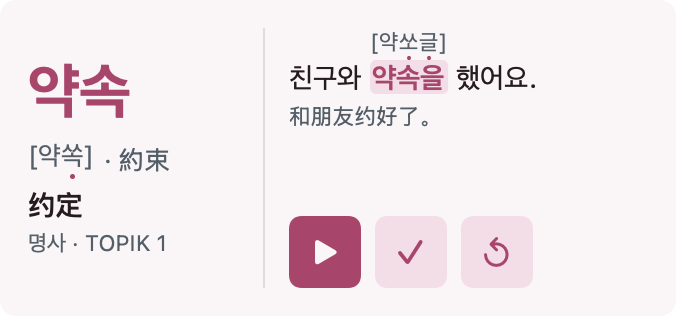

Daneo Daily
Korean · 韩语 · iPhone / iPad / Mac / Apple Watch

Compare the spelling with the bracketed pronunciation. Words with hanja data show their Sino-Korean forms; annotated examples can include pronunciation changes.
对照韩文拼写与方括号内的实际读音；有汉字数据的词显示汉字原形，带标注的例句可显示音变读法。
Free app with an optional one-time Pro purchase. 免费下载，可选一次性 Pro 内购。